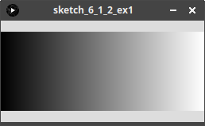
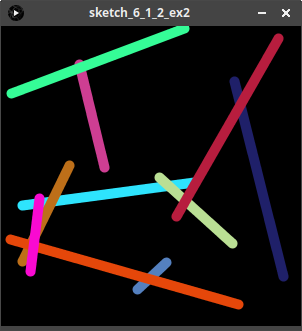
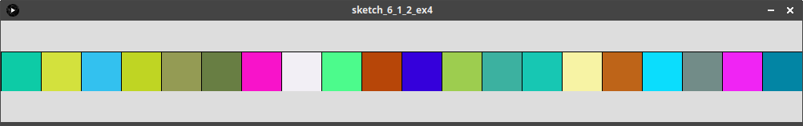
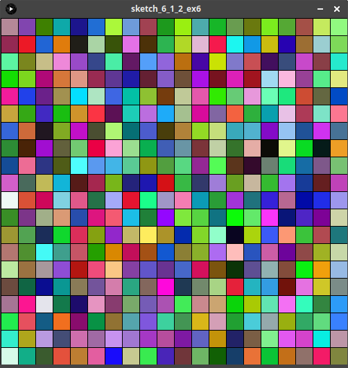
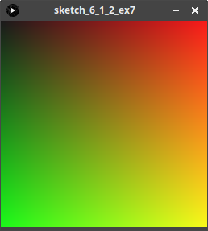
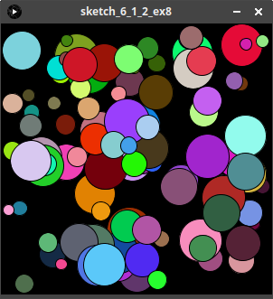

6.1.2 La boucle for⚓︎
Un ordinateur est fait pour effectuer des calculs longs et répétitifs.
1. Le principe⚓︎
Imaginons - nous sommes en 2074 - une maman (ou un papa) qui souhaite faire manger à son enfant les 10 dernières cuillères de soupe... en programmant son robot domestique pour qu'il annonce ces phrases à sa place.
On pourrait imaginer un code qui ressemble à ça:
print("Une cuillère pour maman")
print("Une cuillère pour papa")
print("Une cuillère pour mamie Françoise")
print("Une cuillère pour papy Jacques")
print("Une cuillère pour mémé Paulette")
print("Une cuillère pour tata Jacqueline")
print("Une cuillère pour tonton Michel")
print("Une cuillère pour le cousin Maurice")
print("Une cuillère pour la cousine Gertrude")
print("Une cuillère pour Médor")
C'est très répétitif. Et heureusement qu'il n'y a que 10 cuillères...
D'autant que chaque instruction est quasiment identique, seul le nom du membre de la famille change.
En français, on serait tenté de résumer en
«annonce une cuillère pour chacun des 10 membres de la famille»
Heureusement, dans tous les langages de programmation, il existe une instruction qui permet de répéter une instruction (ou plusieurs instructions) pour chaque élément d'un ensemble de valeurs donné: la boucle for.
Vocabulaire
En programmation, on parle de boucle pour toute instruction qui permet de répéter des instructions. On utilise plutôt le verbe itérer et on parle d'itérations.
2. Les ensembles de valeurs énumérables / itérables⚓︎
En mathématiques, on dit qu'un ensemble est dénombrable lorsqu'on peut associer à chaque élément de l'ensemble un nombre (traditionnellement 1, 2, 3...)
- les fraises Tagada d'un paquet sont dénombrables.
- les voitures qui roulent sur l'autoroute sont dénombrables.
- l'eau qui coule d'un robinet n'est pas dénombrable.
En informatique, il existe un concept similaire qui va désigner les objets que l'on peut énumérer, c'est-à-dire les décomposer en une succession ordonnée d'éléments. On les appelle les énumérables ou les itérables (Python utilise le mot anglais iterable).
- la variable
NSI(qui est de typestring) est énumérable : on peut la décomposer enN,S,I. - la variable
[4, 3, 17](qui est de typelist1) est énumérable : on peut la décomposer en4,3,17. - la variable
5(qui est de typeint) n'est PAS énumérable : on ne peut pas la décomposer.
3. La syntaxe⚓︎
La boucle for
Pour mettre en place cette boucle, on a besoin d'identifier:
- les instructions à répéter;
- pour quelles valeurs différentes on doit les répéter: on a donc besoin d'une variable et d'un iterable que cette variable va parcourir;
- identifier dans les instructions ce qui dépend de cette variable de boucle.
Syntaxe générale:
for var in iterable:
*instructions à répéter*
var est un nom de variable (non précédemment déclarée dans le programme), iterable un objet ... itérable.
On dit que var parcourt l'ensemble iterable.
Exemples essentiels à tester
for l in "INRIA":
print(l)
Étude du code
Étudions, grâce à PythonTutor, le détail de cette exécution.
Cliquez sur Next et observez bien l'évolution de la variable k.
for a in [1, 2, 3, 4]:
b = 2 * a
print("le double de", a, "est", b)
Étude du code
Étudions, grâce à PythonTutor, le détail de cette exécution.
Cliquez sur Next et observez bien l'évolution de la variable a.
for a in [1, 2, 3, 4, 5, 6]:
print("miaou")
Étude du code
Étudions, grâce à PythonTutor, le détail de cette exécution.
Cliquez sur Next et observez bien l'évolution de la variable a.
for k in range(10):
print("We're up all night to get lucky")
Étude du code
Étudions, grâce à PythonTutor, le détail de cette exécution.
Cliquez sur Next et observez bien l'évolution de la variable k.
Syntaxe
Il faut absolument un caractère : à la fin de la ligne du for !
Indentation
C'est le décalage par rapport à la marge - qu'on appelle indentation - qui détermine quelles sont les instructions à répéter !
Exemples : attention à l'indentation
Tester les différents codes suivants dans votre IDE ou dans la console ci-dessous:
for k in ["toto", "tata", "tutu"]:
print("Bonjour", end=" ")
print(k)
for k in ["toto", "tata", "tutu"]:
print("Bonjour", end=" ")
print(k)
for k in ["toto", "tata", "tutu"]:
print("Bonjour", end=" ")
print(k)
Exercice 0
Compléter le code suivant pour satisfaire le parent de 2074 qui veur faire manger de la soupe à son enfant.
liste_noms = ["maman", "papa", "mamie Françoise", "papy Jacques", "mémé Paulette", "tata Jacqueline", "tonton Michel", "le cousin Maurice", "la cousine Gertrude", "Médor"]
for
4. À propos du range⚓︎
Il arrive très fréquemment que la variable soit tout simplement un entier, qui doit parcourir un ensemble de nombres entiers consécutifs.
Par exemple, imaginons que votre professur.e d'EPS, à court d'idées d'activités à cause des conditions sanitaires, décide de vous faire faire 20 tours de stade et vous demande d'annoncer à chaque passagesur la ligne de départ à quel tour vous en êtes...
Vous allez donc annoncer successivement «Tour 1!», «Tour 2!», «Tour 3!», etc. jusqu'à «Tour 20!».
Pour représenter cette situation, on peut donc imaginer un code ressemblant à:
for k in [1, 2, 3, 4, 5, 6, 7, 8, 9, 10, 11, 12, 13, 14, 15, 16 ,17 ,18 ,19 ,20]:
print("Tour",k)
Heureusement, comme vous avez dû le comprendre dans le dernier exemple du 3., l'objet de type range permet de générer ce genre d'ensemble de nombres entiers consécutifs.
Générer une plage de nombres entiers
L'objet range(start, stop, step):
-
il renvoie une séquence de nombres entiers en partant de
start(inclus) jusqu'àstop(exclus), en incrémentant destep; -
startest facultatif et vaut 0 par défaut; -
stepest facultatif et vaut 1 par défaut. Mais si on veut préciserstep, alors il faut donner aussistart, même si sa valeur est 0.
Attention
Un objet range n'est pas de type list. Mais on peut le convertir en liste avec la fonction list.
>>> range(10)
range(0, 10)
>>> list(range(10))
[0, 1, 2, 3, 4, 5, 6, 7, 8, 9]
>>>
Question
Comment générer les nombres entiers de 1 à 20 (comme dans l'exemple des tours de terrain) avec un range?
Il ne faut pas commencer à 0... et le stop n'est pas inclus dans la séquence !
Il faut utiliser range(1, 21) .
5. La double boucle imbriquée⚓︎
Il est très souvent utile d'imbriquer une boucle dans une autre, notamment lors du parcours de tous les pixels d'une image (voir les exercices graphiques sous Processing).
Prenons pour l'instant un exemple numérique : Comment écrire tous les produits de deux nombres compris entre 1 et 10?
Il faut pour cela que le premier facteur parcourre range(1, 11) mais également le deuxième facteur!
On obtient donc le code suivant:
1 2 3 | |
À vous d'essayer
Comment obtenir l'affichage suivant?
Papa dit : « et une cuillère pour Riri ! »
Papa dit : « et une cuillère pour Fifi ! »
Papa dit : « et une cuillère pour Loulou ! »
Maman dit : « et une cuillère pour Riri ! »
Maman dit : « et une cuillère pour Fifi ! »
Maman dit : « et une cuillère pour Loulou ! »
Mamie dit : « et une cuillère pour Riri ! »
Mamie dit : « et une cuillère pour Fifi ! »
Mamie dit : « et une cuillère pour Loulou ! »
1 2 3 | |
6. Pour conclure⚓︎
À retenir
- La boucle
fors'utilise lorsqu'on connaît à l'avance le nombre de répétitions à effectuer: soit un nombre entier, soit un ensemble de valeurs contenus dans un iterable. On parle de boucle bornée. -
Les instructions répétées peuvent - mais ce n'est pas obligatoire - faire appel à la variable de boucle, mais il ne faut pas que ces instructions la modifient.
-
Ne pas oublier les
:et l'indentation ! range(n)génère une séquence dennombres entiers: on s'en servira dès qu'on aura besoin de répéternfois des instructions.
7. Exercices⚓︎
Série 1: la base⚓︎
Téléchargez le notebook d'exercices : T6.1_Exercices2.ipynb
Quelques corrections
1 2 3 4 5 6 | |
À la ligne 3, on peut aussi écrire somme += k.
1 2 3 4 5 | |
La ligne 4 est équivalente à somme = somme + n.
La fonction len donne le nombre d'éléments d'un iterable.
1 2 3 4 5 6 7 | |
Série 2: à rendre⚓︎
À faire sur Capytale : 30de-55310
Exercice 1
Proposer un code qui écrit la table de multiplication de 7.
La sortie doit ressembler à:
7*1 = 7
7*2 = 14
...
7*10 = 70
for k in range(1, 11):
print("7*", k, "=", 7*k)
Exercice 2
Sur un jeu d'échecs, les cases sont repérées par une lettre (de A jusqu'à H) et par un chiffre (de 1 jusqu'à 8).
Les cases sont donc A1, A2, A3, ..., H7, H8.
Proposer un code qui écrit toutes les cases possibles.
Pour convertir un entier en chaîne de caractères, on utilise la fonction str:
>>> k = 3
>>> k
3
>>> str(k)
'3'
1 2 3 | |
Série 3: avec Processing⚓︎
Consulter d'abord la page sur Processing.
Dans tous les exercices, votre code doit contenir au moins une boucle for.
Exercice 1
L'objectif est d'obtenir un dégradé de gris:

Pour rappel, un niveau de gris est un couleur RGB dont les trois composantes (entre 0 et 255) rouge, verte et bleue sont identiques.
On prendra un canevas de 256x100 pixels.
On trace 256 lignes, chacune ayant un niveau de gris allant de 0 à 255 et l'abscisse des extrémités varie également de 0 à 255. Donc on n'a besoin que d'une variable de boucle...
size(256, 256)
for k in range(256):
stroke(k, k, k)
line((k, 0), (k, 99))
Exercice 2
L'objectif est d'obtenir dix lignes aléatoires, de couleur aléatoire et d'épaisseur 10, sur un canevas de 300x300 pixels.
La fonction
random(a, b)permet d'obtenir un entier pseudo-aléatoire entreaetb.

size(300, 300)
background(0, 0, 0)
for k in range(10):
point_A = (random(0, 300), random(0, 300))
point_B = (random(0, 300), random(0, 300))
r = random(0, 255)
g = random(0, 255)
b = random(0, 255)
stroke(r, g, b)
stroke_weight(10)
line(point_A, point_B)
Exercice 3
Écrire un programme qui trace un quadrillage (espacement de 20 pixels) sur un canevas de 300x300 pixels.
for k in range(300//20):
line((20*k, 0), (20*k, 300))
line((0, 20*k), (300, 20*k))
Exercice 4
Écrire un programme qui dessine une ligne de 20 carrés de taille 50x50, dont la couleur sera aléatoire.

size(1000, 50)
for k in range(20):
r = random(0, 255)
g = random(0, 255)
b = random(0, 255)
fill(r, g, b)
rect((50*k, 0), 50, 50)
Exercice 5
Animer le programme de l'exercice précédent en définissant les fonctions setup et draw.
Vous pouvez ralentir l'animation en untilisant la fonction frameRate dans la fonction setup.
Par exemple, pour 15 images par seconde:
def setup():
frameRate(15)
def setup():
size(1000, 50)
frameRate(15)
def draw():
for k in range(20):
r = random(0, 255)
g = random(0, 255)
b = random(0, 255)
fill(r, g, b)
rect((50*k, 0), 50, 50)
Exercice 6
Reprendre l'exercice 4, mais cette fois avec un carré de carrés... (penser à réduire la taille de moitié).

1 2 3 4 5 6 7 8 9 | |
Exercice 7
Reproduire la figure suivante sur un canevas de 256x256 pixels.

- la composante bleue est toujours 0;
- faire varier les composantes rouge et verte;
- pas d'animation
1 2 3 4 5 | |
Exercice 8
Écrire un programme qui affiche aléatoirement 100 disques, de diamètre compris entre 10 et 50 et de couleur de remplissage aléatoire.
Attention, les disques ne devront pas être «coupés» sur les bords de l'écran.

1 2 3 4 5 6 | |
-
un objet de type
listest un type construit que nous étudierons au thème 2, qui s'écrit entre crochets, ses éléments étant séparés par une virgule (comme dans cet exemple). On peut donc parcourir ses éléments. ↩